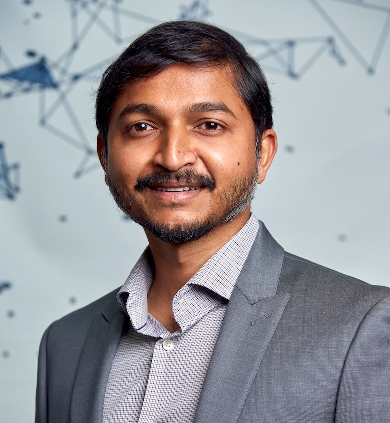

Jaya Prakash Champati Assistant Professor, Computer Science, University of VictoriaEmail: jpchampati [at] uvic [dot] ca Phone: 250-472-5899 | Office: ECS 456 | Victoria, BC, Canada UVic Profile / Google Scholar / Edge AI Research Group BiographyJaya Prakash Champati is an Assistant Professor in the Department of Computer Science at the University of Victoria. His research focuses on decision-making, learning, and resource allocation problems in networking and information systems, with current emphasis on Edge AI, hierarchical inference, inference offloading, online learning, and Age of Information. He received his PhD in Electrical and Computer Engineering from the University of Toronto in 2017, his MTech from the Indian Institute of Technology Bombay in 2010, and his BTech from the National Institute of Technology Warangal in 2008. Before joining UVic, he was a Research Assistant Professor at IMDEA Networks Institute and a postdoctoral researcher at KTH Royal Institute of Technology. Earlier in his career, he worked on LTE MAC layer development at Broadcom Communications in Bangalore. Research Interests
Recent Highlights
Edge AI Research GroupI lead the Edge AI Research Group at UVic. Our lab studies hierarchical inference, inference offloading, online learning, and information freshness in networked systems. The lab page includes current members and the current openings note. Teaching |